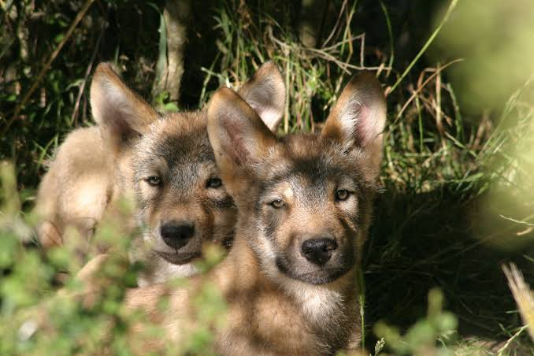
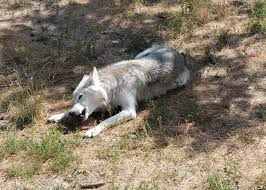

Parc à Loups
du Gévaudan


⟹ Parc Animalier & Faune Sauvage ⟸
Tout commence en 1961, quand Gérard Ménatory, journaliste au Midi Libre et naturaliste passionné, recueille en Pologne deux louveteaux, Toundra et Bialow, dans la forêt de Białowieża. Ne pouvant les garder à Mende, il les installe dans une réserve privée de trois hectares au Chastel-Nouvel.

En 1962, le parc animalier du Gévaudan voit officiellement le jour à Sainte-Lucie, près de Marvejols, avec dix espèces d'animaux d'Europe dont cinq loups. La horde de Gérard Ménatory grandit rapidement : quinze individus dès 1964, avant un transfert complet vers le parc zoologique de Sainte-Lucie en 1971.
C'est en 1985, avec le concours du Conseil général de la Lozère et de la SELO, que naît le Parc à Loups du Gévaudan proprement dit, désormais uniquement dédié à cette espèce longtemps redoutée sur ces terres, précisément celles où sévit au XVIIIe siècle la légendaire Bête du Gévaudan.

Rénové en profondeur en 2020, le parc s'impose aujourd'hui comme le plus grand parc à loups d'Europe, avec de nouveaux postes d'observation offrant une immersion renouvelée dans le monde de l'animal.
Un journaliste devenu naturaliste : Gérard Ménatory, ethnologue et journaliste au Midi Libre, se prend de passion pour les loups après avoir recueilli ses deux premiers pensionnaires en Pologne en 1961.
Une réhabilitation face à la légende : dans une région marquée par le souvenir de la Bête du Gévaudan, il fait le pari, à contre-courant, de réconcilier le public avec cet animal mal-aimé.
Un héritage devenu référence : le parc qu'il a initié est aujourd'hui considéré comme le plus grand parc à loups d'Europe, accueillant plusieurs dizaines de loups répartis en plusieurs meutes.
Une mission toujours vivante : le parc poursuit l'objectif originel de Ménatory, sensibiliser les visiteurs au rôle écologique du loup et à son retour naturel sur le territoire français.
Adresse Parc à Loups du Gévaudan, Sainte-Lucie, 48100 Saint-Léger-de-Peyre (à environ 9 km de Marvejols).
Horaires variables selon la saison : environ 10h-17h en février, mars, novembre et décembre ; 10h-18h d'avril à juin et de septembre à octobre ; 10h-19h en juillet-août, avec nocturnes certains soirs ; fermeture entre début janvier et le début des vacances de février.
Accès par l'autoroute A75, sortie 37, puis la D809 sur environ 5 km ; en juillet-août, une navette relie Mende, Marvejols et le parc les lundis et vendredis.
Services chenil gratuit à l'entrée, restaurant-snack sur place, boutique ; réservation conseillée pour les visites pédagogiques et les nocturnes d'été.